ПЕРШИЙ ПЛАН · ІНІЦІАЦІЯ НА ОКУПОВАНИХ ТЕРИТОРІЯХ
Богдан
Характерник, який відкриває портали, допомагає новоініційованим і координує спільноту на окупованих територіях.
Детальніше →ЛЮДИ РІЗНИХ СВІТІВ І ЧАСІВ
Їхні історії починаються в різних світах і в різні епохи, але поступово стають частинами однієї великої історії.
ПЕРШИЙ ПЛАН · ІНІЦІАЦІЯ НА ОКУПОВАНИХ ТЕРИТОРІЯХ
Характерник, який відкриває портали, допомагає новоініційованим і координує спільноту на окупованих територіях.
Детальніше →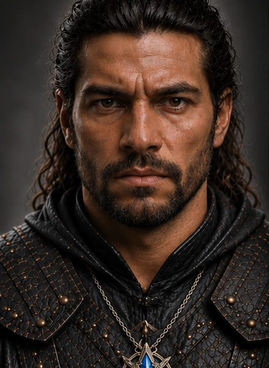
ХОРУНЖИЙ ОТАМАН · ВИРОБНИЦТВО ТА ЕВАКУАЦІЯ
Характерник, який координує наукові й виробничі проєкти та відкриває портали для евакуації людей.
Детальніше →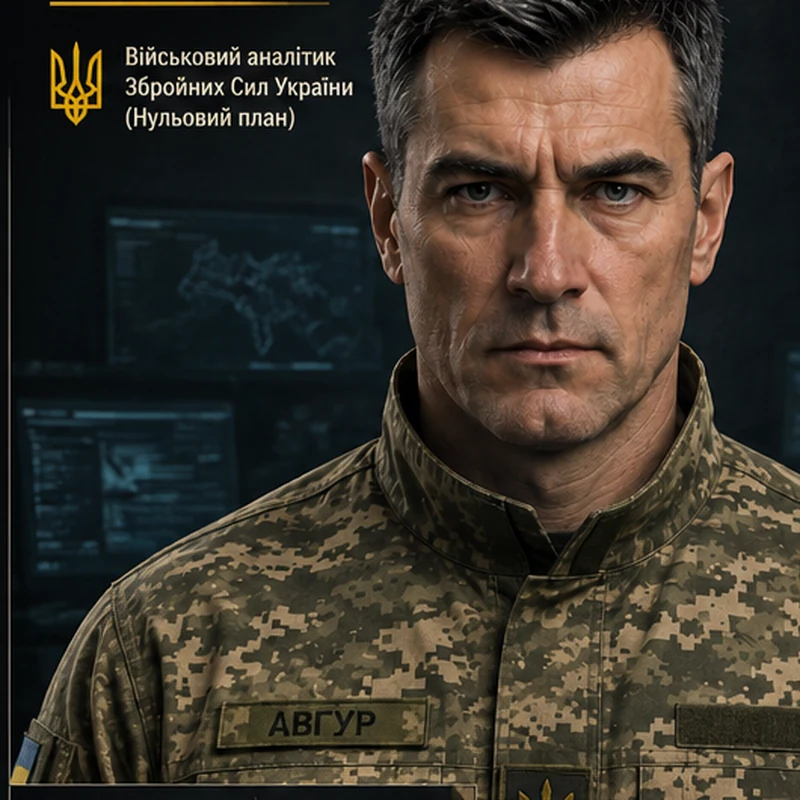
НУЛЬОВИЙ ПЛАН · ЗБРОЙНІ СИЛИ УКРАЇНИ
Військовий аналітик, який керує створенням розвідувальної мережі для спостереження та аналізу даних.
Детальніше →
НУЛЬОВИЙ ПЛАН · МІЖПЛАНОВІ ПЕРЕХОДИ
Характерник, який проводить переходи між планами, допомагає мешканцям віддалених світів і досліджує невідомі плани.
Детальніше →
НУЛЬОВИЙ ПЛАН · ПОРТАЛЬНІ ОПЕРАЦІЇ
Характерник, який спеціалізується на складному керуванні порталами та перенесенні великих конструкцій між планами.
Детальніше →
ХАРАКТЕРНИКИ · ІНІЦІАЦІЯ · ПОРТАЛИ
Юна українська характерниця. Після ініціації опановує портали, проходить навчання з Мольфаром, переживає важке поранення й згодом допомагає навчати нових характерників.
Детальніше →ПЕРШИЙ ПЛАН · ЕВАКУАЦІЯ ЦИВІЛЬНИХ
Мешканець міста, який під час масованої атаки дістається нового захищеного бомбосховища.
Детальніше →
ПЕРШИЙ ПЛАН · СЛУЖБА БЕЗПЕКИ УКРАЇНИ
Генерал, заступник голови СБУ. Стриманий і досвідчений керівник зі стратегічним мисленням.
Детальніше →
ПІДЗЕМНІ МІСТА · МЕДИЦИНА
Учень, який відкриває в собі хист до медицини. Інтуїтивно визначає проблеми пацієнтів і навчається працювати з медичними капсулами.
Детальніше →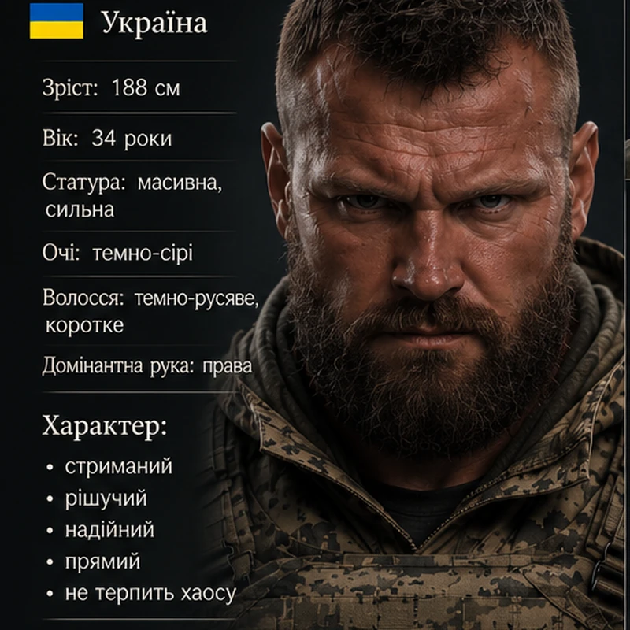
ПЕРШИЙ ПЛАН · ПІХОТА
Український піхотинець, який воює від початку війни. Разом із Феніксом проходить через портал на орбітальну базу.
Детальніше →
ПІДЗЕМНІ МІСТА · АРТЕМ, ДЕНИС І КАЙР
Друг Артема й Дениса. Разом із друзями досліджує підземне місто, відкриває для себе нові можливості та знайомиться з Кайром.
Детальніше →
ПЕРШИЙ ПЛАН · ПРОРОЦТВА
Дружина діда Миколи, жінка з даром пророцтва. Її бачення майбутнього змінюються разом із подіями, а попередження про загибель людства стало одним із поштовхів до перших рішень героїв.
Детальніше →
НАТО · МИРОТВОРЧА МІСІЯ
Офіцер миротворчого контингенту НАТО. Координує місії, зв’язок і цивільно-військову взаємодію.
Детальніше →
ДРУГИЙ ПЛАН · ВІЙСЬКОВЕ КОМАНДУВАННЯ
Генерал Другого плану, координує авіацію, оборону та евакуацію цивільного населення.
Детальніше →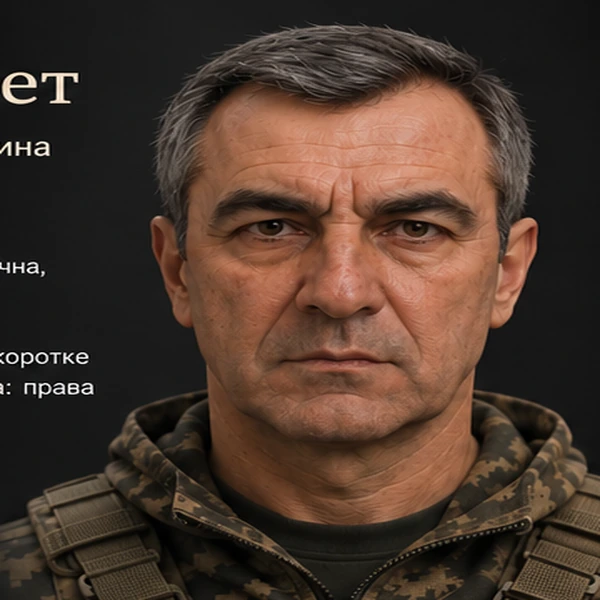
ТУРЕЧЧИНА · ВІЙСЬКОВА ЛІНІЯ
Турецький генерал, давній друг українського генерала Олексія та представник Ордена.
Детальніше →
ПЕРШИЙ ПЛАН · ЗБРОЙНІ СИЛИ УКРАЇНИ
Бойовий генерал, принциповий командир і координатор оборони України.
Детальніше →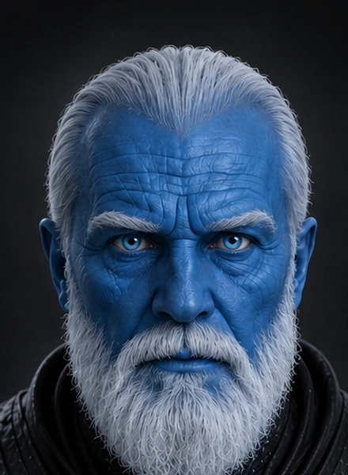
НУЛЬОВИЙ ПЛАН · ГЕТЬМАН · МІЖПЛАНОВА КООРДИНАЦІЯ
Гетьман Нульового плану. Координує міжпланову співпрацю, оборону, виробництво та евакуацію цивільних.
Детальніше →
УКРАЇНА · ВІЙСЬКОВА ЛІНІЯ
Український військовий командир, спеціалізується на тактичному плануванні та управлінні підрозділами.
Детальніше →
ПІДЗЕМНІ МІСТА · МЕНТАЛЬНІ ЗДІБНОСТІ
Друг Артема й Влада. Допитливий і товариський; після порятунку з лабораторії поступово відкриває нове життя та вчиться самостійно розпоряджатися своїми винятковими ментальними здібностями.
Детальніше →ВІДДАЛЕНИЙ ПЛАН
Мешканець віддаленої планети, який живе там майже двісті років. Його історія показує, як Закон трьох днів обмежував можливість переселення.

НУЛЬОВИЙ ПЛАН · РОЗВІДКА · КОМАНДУВАННЯ
Капітан і командир розвідувальної групи характерників, яка досліджує невідомі плани та технології.
Детальніше →
ХАРАКТЕРНИКИ · ФІНЛЯНДІЯ
Фінський учень Мольфара. Спокійний і небагатослівний, опановує мислезв’язок та вчиться самостійно відкривати портали.
Детальніше →
МЕКСИКА · ДІМ СЬЄРРИ · ХАРАКТЕРНИКИ
Довірена людина Патрона Дому Сьєрри. Воював на українському боці, пройшов ініціацію в Україні та опанував короткі портали.
Детальніше →
ПЕРШИЙ ПЛАН · ЕКОНОМІКА · ІНФРАСТРУКТУРА
Підприємець і системний організатор, який допомагає розбудовувати наукову, економічну та цивільну інфраструктуру.
Детальніше →
НУЛЬОВИЙ ПЛАН · КОНТРРОЗВІДКА
Досвідчений характерник, який керує роботою контррозвідки та протидіє Ордену.
Детальніше →
НУЛЬОВИЙ ПЛАН · ПРОМИСЛОВІСТЬ
Координує виробничі потужності Нульового плану, медичні капсули та перенесення промислових циклів на інші Плани.
Детальніше →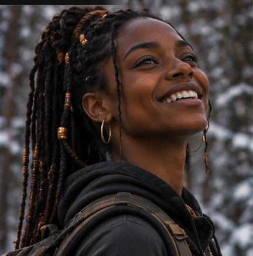
ХАРАКТЕРНИКИ · КЕНІЯ
Учениця Мольфара з Кенії. Упевнена, рішуча й запальна; опановує мислезв’язок і навчається відкривати портали.
Детальніше →
НУЛЬОВИЙ ПЛАН · МЕДИЧНА ПІДГОТОВКА
Юнак із підземного міста Нульового плану. Спостережливий і практичний, швидко знаходить спільну мову з Артемом, Денисом і Владом; разом з Артемом виявляє хист до роботи з медичними капсулами.
Детальніше →
НУЛЬОВИЙ ПЛАН · РОЗВІДКА · НЕЙРОІНЖЕНЕРІЯ
Нейроінженерка, позивний Сигма. Учасниця команди Евігіда, досліджує сканування, нейроінтерфейси та біоорганічні системи кораблів прибульців.
Докладніше →
НУЛЬОВИЙ ПЛАН · МЕДИЦИНА
Медикиня, яка координує міжпланові медичні програми, постачання капсул і підготовку лікарів. Прийняла пропозицію Марата одружитися.
Детальніше →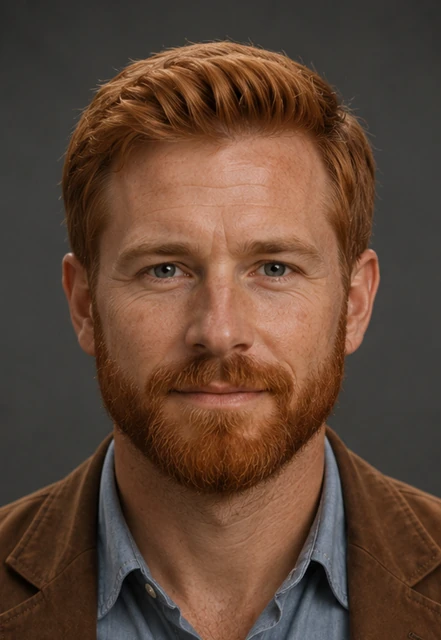
НУЛЬОВИЙ ПЛАН · НАУКА ТА ІНЖЕНЕРІЯ
Старший науковий співробітник і координатор інженерних проєктів. Організовує наукові центри, підземні міста та оцінює нові роботизовані системи.
Детальніше →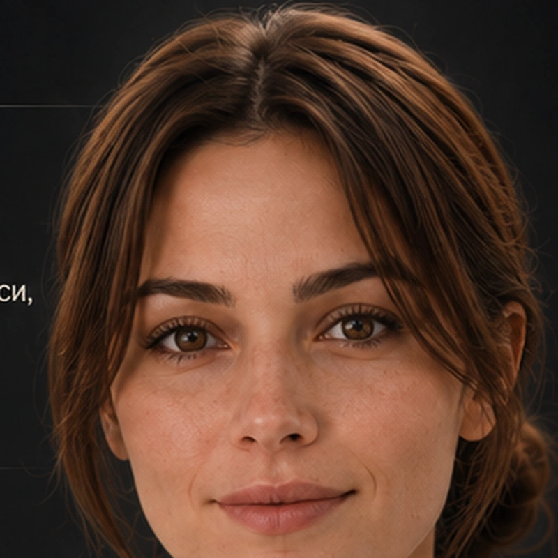
ВІЙСЬКОВА СЛУЖБА · НЕЙРОІНЖЕНЕРІЯ
Військова нейроінженерка, спеціалізація — нейроінтерфейси та мислезв’язок.
Детальніше →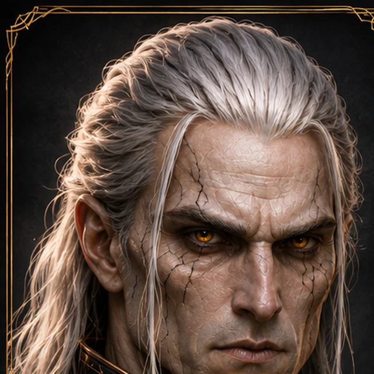
СВІТ ТЕМНОГО · ЛОРД · ПОРТАЛИ
Володар власних земель і давній друг Найріна. Попри присягу Князю, ризикує всім, щоб урятувати його.
Детальніше →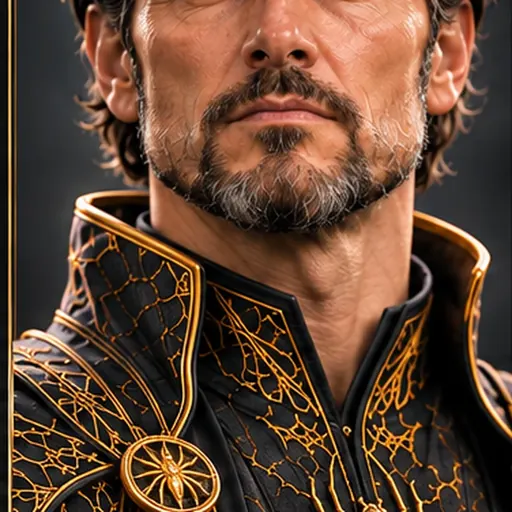
ВІЙСЬКОВЕ КОМАНДУВАННЯ · НАСТУП НА ПОСЕЛЕННЯ
Командувач бронегрупами, який керує наступом і змінює план дій відповідно до ситуації на полі бою.
Детальніше →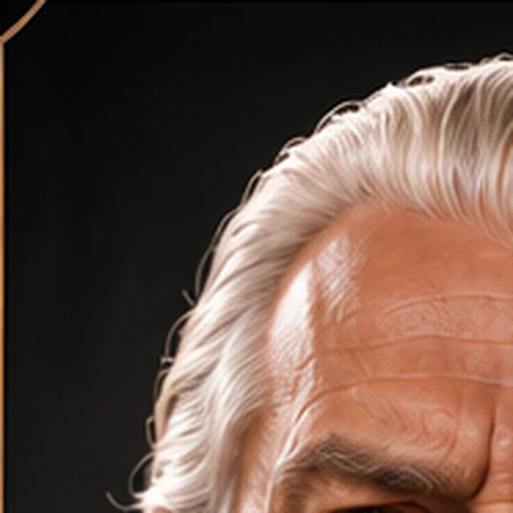
РАДА ЛОРДІВ · ВІЙСЬКОВЕ КОМАНДУВАННЯ
Командувач авіацією військ Верховного. Керує повітряними групами під час наступу.
Детальніше →
РАДА ЛОРДІВ · РАКЕТНІ СИЛИ
Командувач ракетними силами. Організовує масований удар по місту-шляху.
Детальніше →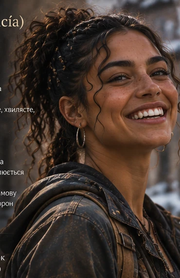
МЕКСИКА · УЧНІ МОЛЬФАРА · ХАРАКТЕРНИКИ
Учениця Мольфара з Мексики. Жвава, відкрита й допитлива; розвиває мислезв'язок і навчається керувати ним.
Детальніше →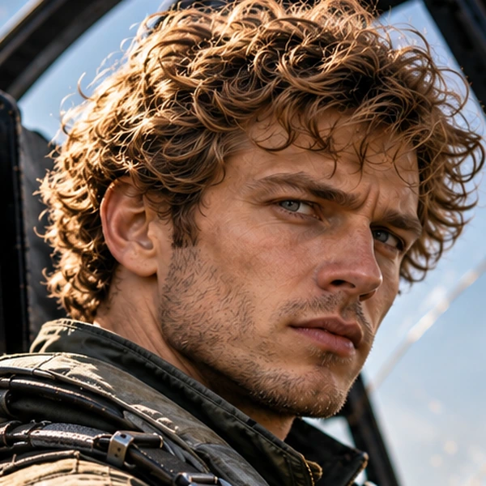
ДРУГИЙ ПЛАН · ВІЙСЬКОВА АВІАЦІЯ
Бойовий пілот, який керує власною авіаційною ланкою. Після проходження порталу його винищувач втрачає тягу, але залишається керованим.
Детальніше →
РОЗРОБКА ТЕХНОЛОГІЙ · РОБОТОТЕХНІКА · ЗАХИСТ
Інженер і координатор розробок автономних платформ R-10 та R-17, мережевого керування роботами й інтеграції мобільних захисних систем.
Детальніше →
ПОЛЬЩА · УЧНІ МОЛЬФАРА · ХАРАКТЕРНИКИ
Сімнадцятирічна учениця з Польщі. Практична, пряма й рішуча; швидко приймає рішення, цінує відповідальність і вчинки більше за слова.
Детальніше →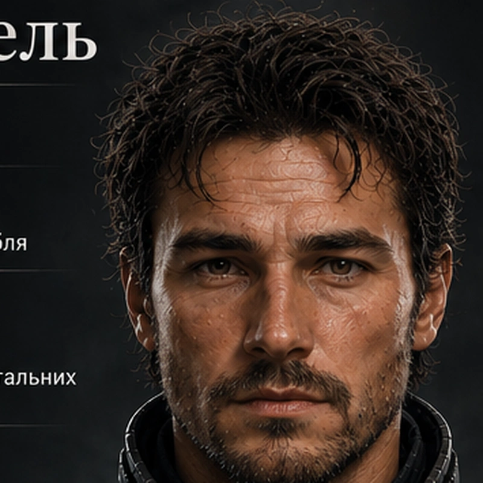
НУЛЬОВИЙ ПЛАН · КОМАНДА ЕВІГІДА
Професійний пілот і оператор корабля. Бере участь у польотах, розвідці та випробуваннях невідомих технологій.
Детальніше →
ХАРАКТЕРНИКИ · УКРАЇНА · КАРПАТИ
Український характерник із Карпат. Наставник і провідник, який навчає молодих характерників, передає досвід і допомагає розвивати здібності.
Детальніше →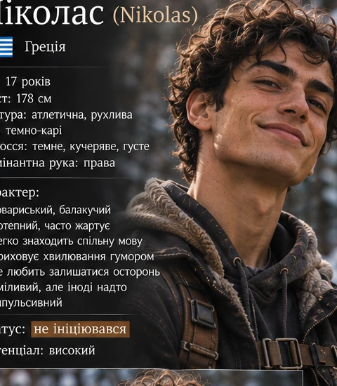
ГРЕЦІЯ · УЧНІ МОЛЬФАРА · ХАРАКТЕРНИКИ
Сімнадцятирічний учень із Греції. Товариський, балакучий і дотепний; легко знаходить спільну мову з іншими, хоча іноді буває надто імпульсивним.
Детальніше →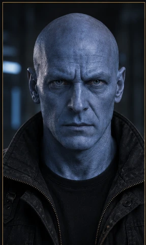
НУЛЬОВИЙ ПЛАН · НАУКА · ЗАХИСНІ ТЕХНОЛОГІЇ
Науковець, який досліджує модуль рогатих і разом із Рітою розробляє адаптивну систему захисного поля для роботизованих платформ.
Детальніше →ІНФРАСТРУКТУРА
Електрик, який працює з відновленням електромережі та локальною інфраструктурою після ударів.
ОРДЕН
Колишній учасник Корпорації, чиї знання про внутрішні коди, маршрути та приховані проєкти допомагають розслідуванню.

УКРАЇНА · ОРДЕН
Головний представник Ордену на території України, відомий також як головний координатор Ордену.
Детальніше →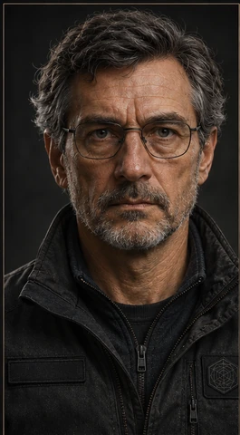
ПЕРШИЙ ПЛАН · ГЕОЛОГІЯ · ІНЖЕНЕРІЯ
Геолог та інженер. Координує аналіз аварійних конструкцій і керує окремою командою, яка створює підземне місто під Донецьком.
Детальніше →
ДРУГИЙ ПЛАН · КООРДИНАЦІЯ
Головний координатор Другого плану. Веде переговори між світами, узгоджує політичні й оборонні рішення та координує участь свого плану у спільній війні.
Детальніше →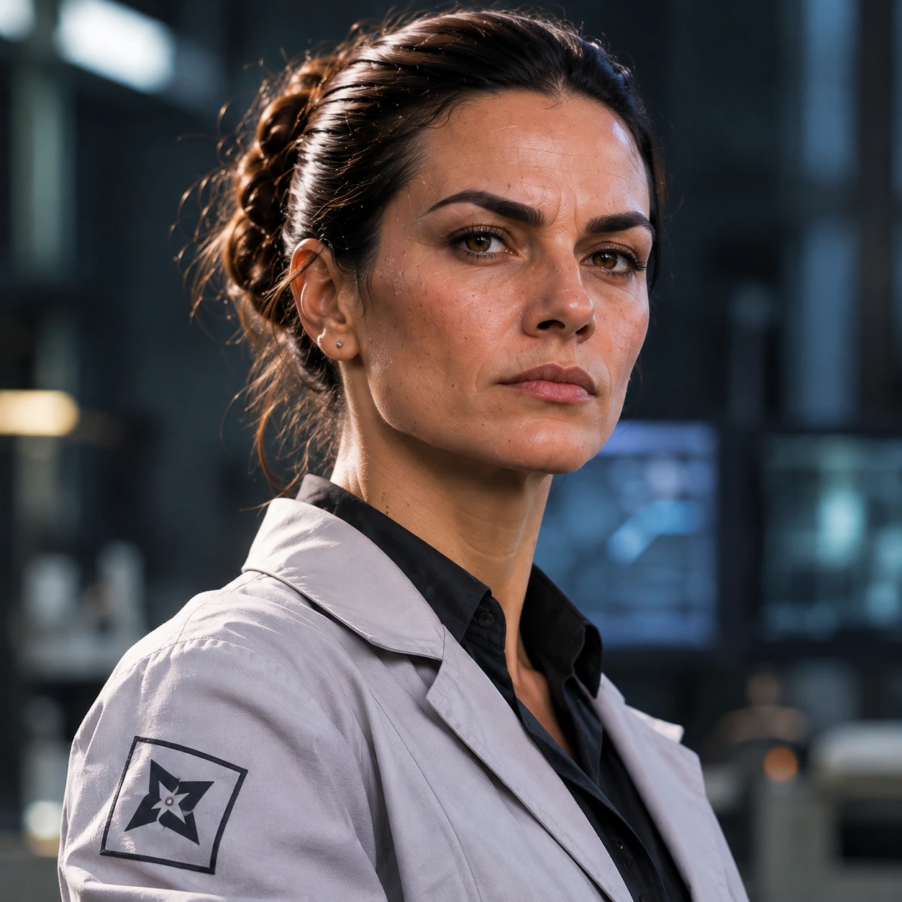
ПЕРШИЙ ПЛАН · ОРДЕН · НАУКА
Професорка й докторка наук, дослідниця просторово-хвильових полів і порталів. Після полону співпрацює з Ноілем над захисним модулем.
Детальніше →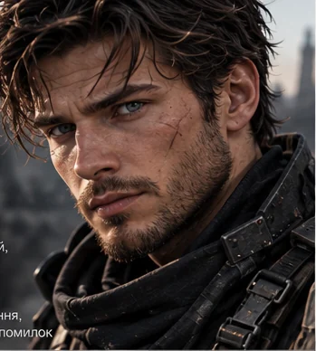
АРМІЯ ТЕМНОГО · ВІЙСЬКОВА ЛІНІЯ
Боєць армії Темного. Дисциплінований, холоднокровний і досвідчений у тактиці; не є командиром бронегрупи.
Детальніше →
УКРАЇНА · ВІЙСЬКОВА ЛІНІЯ
Український військовий. Спокійний, упевнений і комунікабельний, із почуттям гумору.
Детальніше →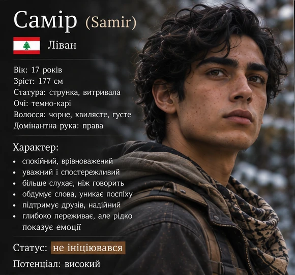
ЛІВАН · УЧНІ МОЛЬФАРА · ХАРАКТЕРНИКИ
Сімнадцятирічний учень Мольфара з Лівану. Спокійний і спостережливий, більше слухає, ніж говорить; виявляє здатність сприймати думки інших.
Детальніше →
ПІВНІЧНА ДЕРЖАВА · ВІЙСЬКОВА ЛІНІЯ
Військовослужбовець Північної держави, який отримав браслет мислезв’язку й разом із товаришами намагався перейти лінію фронту.
Детальніше →РЯТУВАЛЬНА СЛУЖБА
Бригадир рятувальників Об’єднаного людства. Керує рятувальною групою та бере участь у складних евакуаційних операціях.
ВІЙСЬКОВА ЛІНІЯ
Командир роти на Першому плані. Спостерігає за підготовкою та переміщенням військ перед наступом.

ВІЙСЬКОВА ЛІНІЯ · СНАЙПЕР
Досвідчений снайпер, який після полону відкриває в собі здатність користуватися порталами й навчається поєднувати її зі своїми навичками.
Детальніше →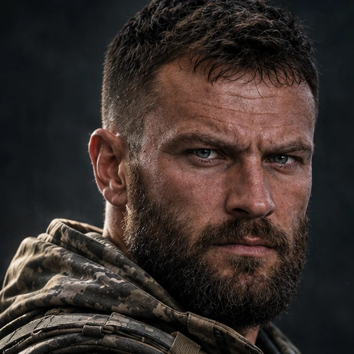
ПЕРШИЙ ПЛАН · ВІЙСЬКОВА ЛІНІЯ
Український військовий, боєць оборонних і штурмових груп. Бере участь у боях за поселення, захопленні полонених і зіткненнях із бойовими роботами.
Детальніше →
ЯПОНІЯ · УЧНІ МОЛЬФАРА · ХАРАКТЕРНИКИ
Сімнадцятирічний учень Мольфара з Японії. Стриманий, аналітичний і спостережливий; опановує мислезв’язок і вчиться керувати ним.
Детальніше →ВИБІРКА ПЕРСОНАЖІВ
До сторінки включено персонажів, які повторюються в трьох наданих актуальних книгах більше двох разів. Варіанти написання одного персонажа, зокрема Райен / Раєн та дід Микола / Миколай, об'єднано в одну картку. Окремо залишено персонажів із різними іменами або позивними, якщо в тексті вони виступають як окремі люди.
Список сформовано за текстом книги, а не за другорядними згадками про організації, підрозділи, техніку чи безіменних персонажів.